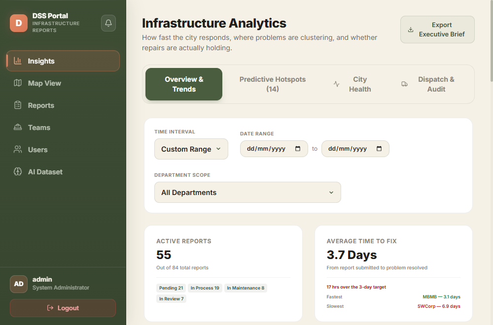
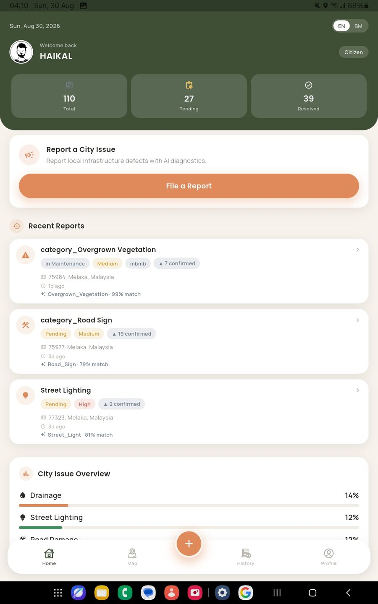
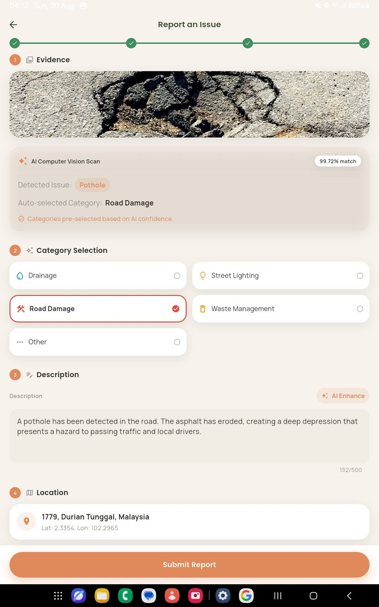
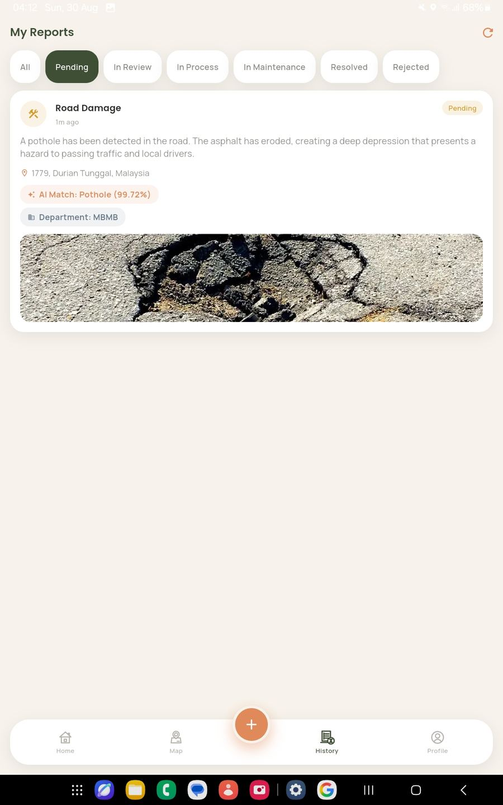
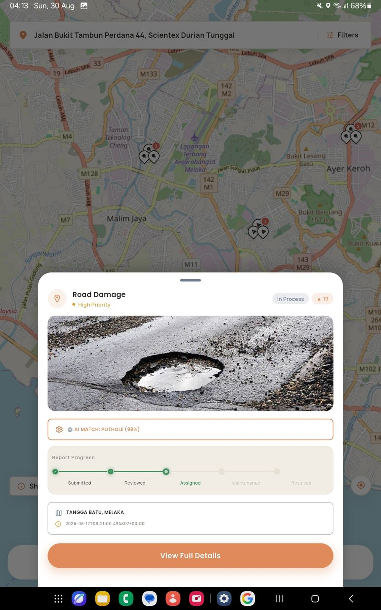
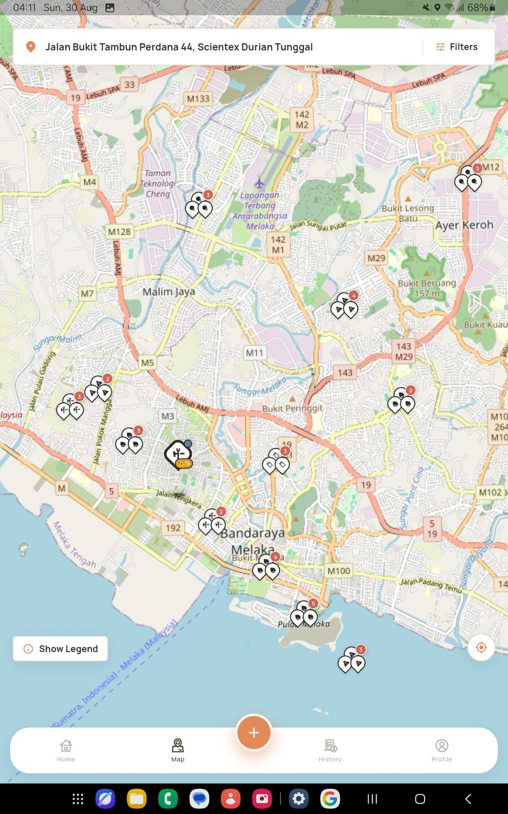
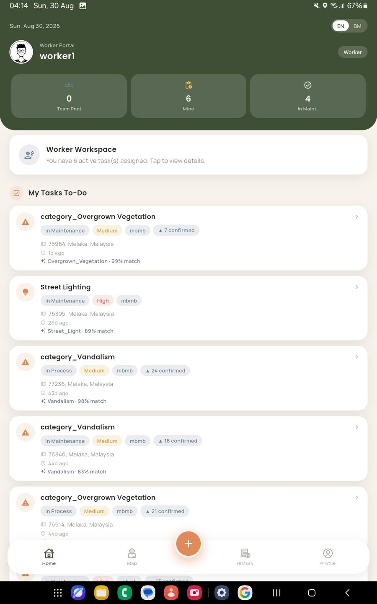
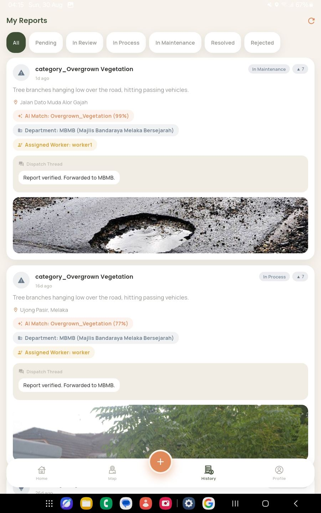
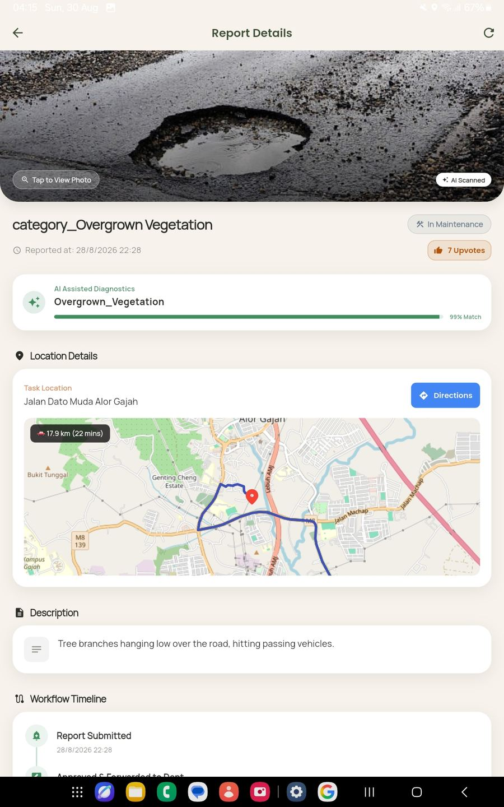
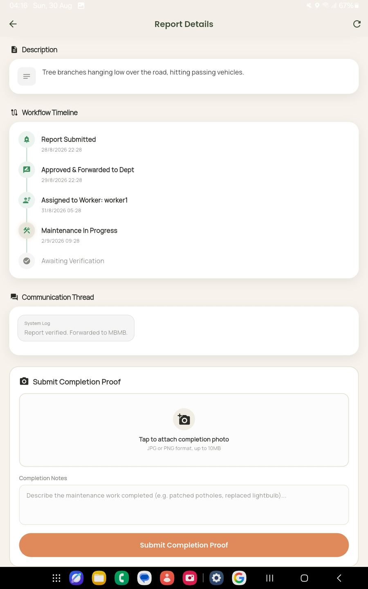

FYP Case Study · Mobile & Web
Decision Support System for Infrastructure Complaint
A Final Year Project: a mobile app for citizens to file infrastructure complaints, paired with a web admin dashboard for city agencies to triage those complaints, dispatch crews, track resolution audit trails, and spot problem hotspots before they escalate — across departments like MBMB (Majlis Bandaraya Melaka Bersejarah).

The Problem
In Malaysia, infrastructure complaints mostly travel through WhatsApp hotlines and social media tags — unstructured, unverified, and invisible to any system that could learn from them. A pothole photo posted to Facebook has no coordinates, no category, no priority, and no way to tell if it's a duplicate of five other reports for the same hole.
This Final Year Project, aligned with the Malaysia Smart City Framework (MSCF), replaces that fragmentation with a structured pipeline: a mobile app that captures every complaint with a verified category, photo, and GPS location, and a web dashboard that turns the resulting stream into dispatch decisions and city-wide insight for local authorities like MBMB.
My role: I designed and built the full three-tier system solo — the Flutter citizen and worker apps, the React admin dashboard, the FastAPI backend, and the MobileNetV2 image-classification model that verifies each report's photo against its category before it ever reaches a human reviewer.
How a Report Becomes Data
The admin portal is only half the system — these screens are the mobile side: the citizen reporting app and the field-worker dispatch app. Together they show the full lifecycle of a complaint, from the moment it's filed to the moment a crew closes it out.

Citizens see live totals and a breakdown of issue categories.

AI computer vision pre-classifies the defect at submission time.

Every report is tracked through a defined status pipeline.

Reports plot on a map with the same five-stage pipeline the DSS Dispatch & Audit tab tracks.

Clustered reports across the city — raw input for hotspot analysis.

Triaged reports become a task queue for field workers.

A dispatch audit thread logs each verification and handoff.

Field workers get routing directly to the task location.

Resolution requires photo proof before a report closes out.
Inside the Admin Portal
Everything above feeds into six modules in the DSS sidebar: Insights, Map View, Reports, Teams, Users, and AI Dataset. The screenshot at the top of this page is the Insights → Overview & Trends tab, live against real seeded report data.
Insights & Analytics
Four tabs — Overview & Trends, Predictive Hotspots, City Health, and Dispatch & Audit — cover active-report counts, average time-to-fix against a 3-day target, and a per-department breakdown, with a one-click Executive Brief PDF export.
Interactive Map View
A Leaflet map with clustered markers and a heatmap layer (leaflet.heat) for spotting recurring problem areas, plus Turf.js-powered geospatial checks for department boundary intersections.
What-If Simulator
Lets an administrator model the effect of reassigning crews or shifting priority thresholds before committing to a dispatch decision.
Reports & Dispatch
Full report explorer with detail modals, cluster-based dispatch actions for grouping nearby incidents into one crew visit, and team-notification triggers.
Teams & Users
Assign field workers to departments, manage administrator accounts, and review a repair-reliability check flagging repeat failures at the same location.
AI Dataset
A dedicated view into the image dataset and confidence scores behind the AI classification pipeline shared with the citizen-reporting app.
Security & Data Integrity
A report here can trigger a real crew being dispatched with real municipal resources, so the system was built with a set of trust safeguards that go beyond a typical student prototype — the kind of thing that determines whether a reporting platform like this could actually be trusted in production.
Password & Session Security
User passwords are never stored in plain text — they're hashed with bcrypt via passlib before persistence. Sessions are authenticated with signed tokens (JWT via python-jose) rather than server-side session state.
Role-Scoped Access Control
Admin dashboard access is role-scoped: what a dispatcher, agency admin, or field worker can see and act on is restricted by their assigned role, not just by being logged in.
Image Provenance Forensics
Since priority scoring and crew dispatch depend on the submitted photo being real, a dedicated verification step inspects image metadata and screens for signs of synthetic or AI-generated imagery before a report reaches the queue.
Proximity Duplicate Detection
A new submission within 50 metres of an existing open complaint in the same category is flagged as a probable duplicate and linked to the original, instead of inflating the queue and distorting the analytics.
Secrets Management
No credentials live in source code. The database connection string, token-signing
secret, and dataset-repository credentials are all supplied via environment
variables — documented in a committed .env.example without ever
exposing real values.
Verified Reporting Accountability
Citizen registration captures a Malaysian IC number to tie every report to a verifiable identity and discourage abuse — used only for accountability, never displayed on any screen.
Tech Stack
Mobile
Web Frontend
Backend
Security
Database
AI / Machine Learning
Mapping & Geospatial
Data & Reporting
Testing & Tooling
Deployment
Challenges & What's Next
Known limitations
The backend runs as serverless functions, which capped the AI inference bundle size and forced the model to be converted to TensorFlow Lite; the same platform adds a cold-start delay after an idle period, even though steady-state inference lands at 0.31 seconds.
Priority scoring today is single-factor (category weight only) — it doesn't yet account for corroborating reports, complaint age, or proximity to schools and hospitals. And the classification model was trained mostly on public imagery rather than Malaysian infrastructure photos, which the self-growing dataset pipeline is designed to correct over time as real submissions accumulate.
Proposed next steps
- Composite priority scoring (corroboration count, complaint age, proximity to sensitive sites)
- Offline submission with deferred sync for poor-connectivity areas
- Expand image classification beyond the current 11 classes
- iOS build of the citizen app (Flutter already supports it)
- Integration with existing local-authority work order systems
- A field trial with an actual local authority